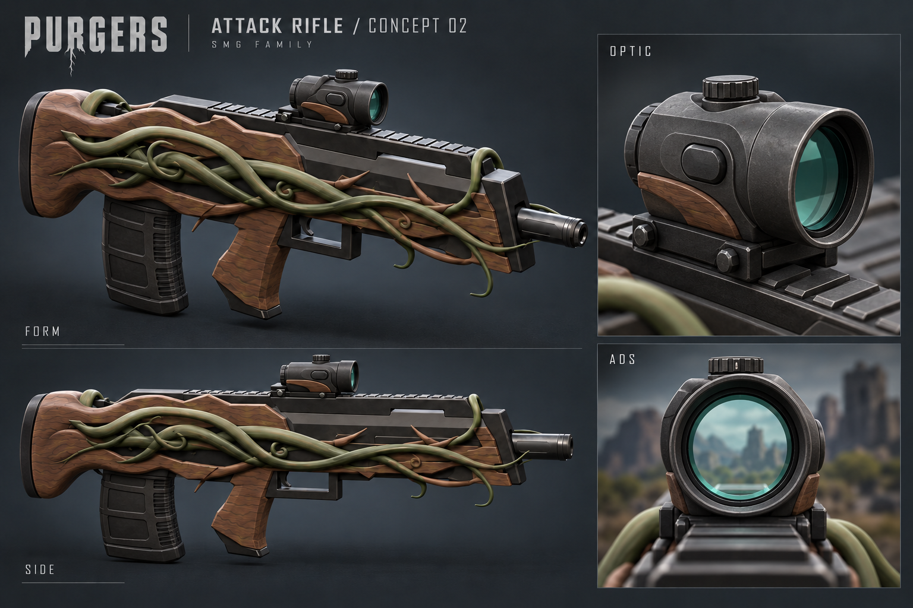

PURGERS / ATTACK / DRAFT03 / 2026-10-07
Concept 02 — 模型實作
原創短筒瞄具、青綠透明鏡片、圓弧木托與短聚合物彈匣。下方圖片與影片全部來自本交付的 Blender 模型，底部另列已確認的生成概念圖。
55,748完整三角化成本 / −17.7%
3,240新增四角面 / 零新增三角面及 N-gon
63 / 6保留骨骼 / 動作
2,864瞄具三角化成本 / −82.1%
換彈｜原動作 1–63 幀
驗證邊界：FBX 往返、手部網格／UV／權重一致、10,395 個骨骼樣本及九條瞄準檢查線通過。尚未匯入 Unity 或替換 Scene／Prefab；遊戲內材質、ADS、全動作穿模與實機效能另行確認。舊網格仍含 20 個三角面、202 個 N-gon 及已記錄的退化面，詳見說明。
已確認概念圖｜方向參考
這張是先前確認的生成概念圖，不是模型渲染。模型沿用原手臂、動作、前端幾何及安裝光軸。
